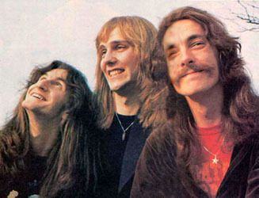

About Rush
Rush was more than just a rock band; they were a musical movement. With a lineup that stayed virtually unchanged for over 40 years, the trio—Geddy Lee, Alex Lifeson, and Neil Peart—created a legacy that spans progressive rock, hard rock, and philosophical lyricism. Their music blended storytelling and virtuosity, creating a unique and timeless sound.
